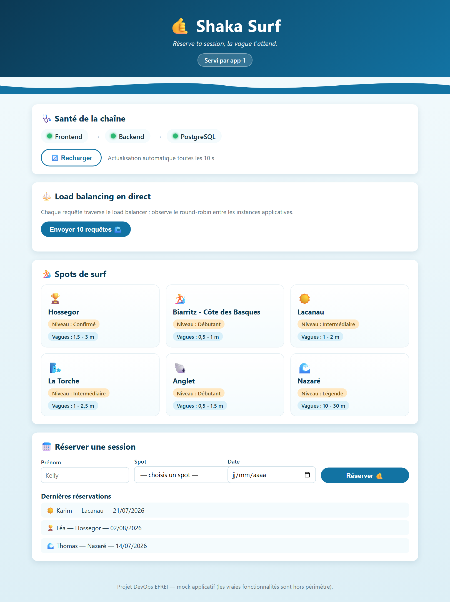
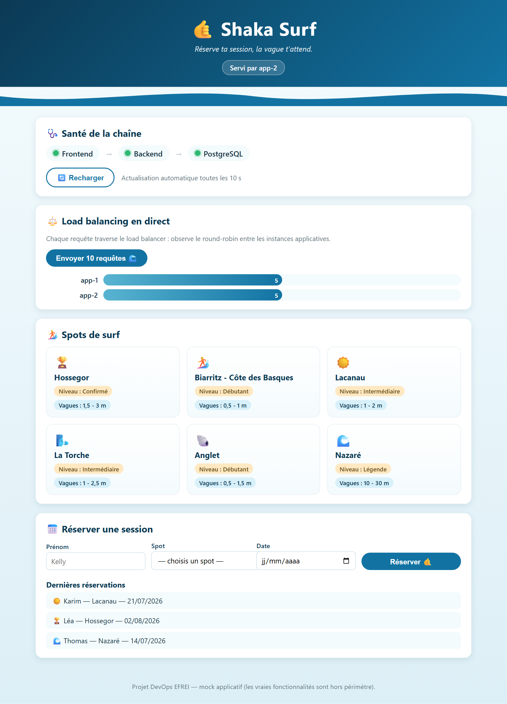
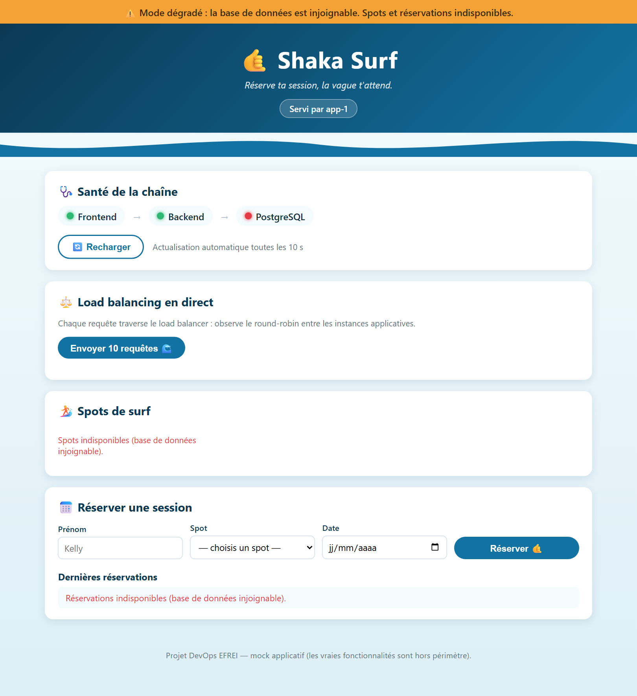

Ce projet construit, entièrement en Infrastructure as Code, une infrastructure cloud multi-machines conforme au schéma imposé : un load balancer en point d'entrée HTTPS, N ≥ 2 machines applicatives identiques, une base de données dédiée non exposée, et un bucket S3 pour des sauvegardes chiffrées. Terraform provisionne le réseau, les pare-feu et les machines AWS puis génère l'inventaire ; Ansible configure chaque groupe de machines via des rôles ; chaque rôle est couvert par un scénario Molecule. Le sujet laissant les technologies applicatives libres, l'application déployée est un mock assumé de Shaka Surf (frontend statique + API Node/PostgreSQL) qui conserve les propriétés structurantes utiles à l'évaluation de l'infrastructure : état persistant en base, instances identiques derrière le répartiteur, et mode dégradé. Une maquette locale (docker compose up) reproduit 1:1 l'architecture AWS pour que le correcteur teste le tout sans compte cloud. Le présent rapport documente l'ensemble, répond point par point au cahier des charges, et présente les preuves d'exécution (captures et sorties réelles) obtenues sur poste.
Le projet assemble les outils pratiqués en TP (Terraform, Ansible, Jenkins, SonarQube) pour produire une infrastructure multi-machines automatisée, documentée et reproductible de zéro par un tiers, à partir du seul dépôt. Le fournisseur cloud et les technologies sont libres ; seules les exigences fonctionnelles et de qualité sont imposées. Les choix retenus : AWS (EC2, VPC, S3, IAM) côté provisionnement, Ansible côté configuration, Docker Compose pour l'exécution applicative sur chaque VM, et Nginx + Let's Encrypt (domaine <ip>.sslip.io) pour la terminaison TLS.
L'objectif de qualité prime : « un projet propre et documenté qui ne tourne pas vaut plus qu'un projet qui tourne mais incompréhensible ». Le dépôt est donc organisé, commenté en français, et chaque exigence est traçable jusqu'au fichier qui la réalise (§11).
L'infrastructure respecte le schéma imposé (Figure 1). Le flux entrant est terminé en HTTPS sur le load balancer, réparti en round-robin vers les VM applicatives ; celles-ci joignent seules la base de données ; la base exporte chaque nuit une sauvegarde chiffrée vers S3. Une VM « usine logicielle » optionnelle (bonus) héberge Jenkins, SonarQube et Nexus, isolée du réseau applicatif.
Point de sécurité central exigé par le sujet : le load balancer ne connaît pas la base de données. Aucune règle réseau ne relie ces deux machines (Tableau 1).
| Groupe | Entrant autorisé | Source |
|---|---|---|
| LB | 80, 443 | 0.0.0.0/0 ; SSH 22 ← admin_cidr |
| App | 80 | SG-LB uniquement ; SSH 22 ← admin_cidr |
| DB | 5432 | SG-App uniquement ; SSH 22 ← admin_cidr |
| citools | 8080/9000/8081, 443 ; 80 (ACME) | admin_cidr (80 ← 0.0.0.0/0 pour le défi Let's Encrypt) |
Le sujet précisant que « le choix des technologies applicatives est libre » et que l'évaluation porte sur l'infrastructure, l'application est volontairement mockée : une carcasse simple aux interactions réelles, sans environnements ni fonctionnalités métier. Ce choix maximise la lisibilité tout en exerçant exactement ce que l'infrastructure doit prouver.
Chaque VM applicative exécute, via docker compose, deux conteneurs :
/api/ vers l'API ;.env).L'API expose : /api/whoami (identité de l'instance — sert à visualiser le round-robin), /api/health (état de la chaîne, ne plante jamais), /api/spots et /api/bookings (lecture/écriture en base). Le schéma et les données de départ sont chargés par app/db/init.sql (idempotent). L'interface (Figure 2) reste ludique : santé de la chaîne en temps réel, visualiseur de répartition de charge, catalogue de spots de surf et réservations persistées.


app-1 (5) / app-2 (5). Le bandeau « Servi par app-2 » confirme l'alternance des deux VM identiques.Tout est provisionné par Terraform (terraform/) — aucune ressource créée à la main :
network.tf).count = var.app_count, validé ≥ 2), la DB (1) et citools (1) — AMI Ubuntu LTS (compute.tf).s3.tf.postgres/ — pas de clé statique (iam.tf).security.tf.local_file rend ansible/inventory/hosts.ini depuis les outputs (groupes loadbalancer, app, db, citools) — templates/inventory.tmpl.La variable admin_cidr est obligatoire et refuse 0.0.0.0/0 (validation Terraform), pour ne jamais ouvrir le SSH ni les UIs à tout Internet. La configuration est validée statiquement (Listing 4).
L'inventaire est organisé par groupes ; les secrets passent par Ansible Vault. Le playbook site.yml orchestre les rôles dans un ordre garantissant que la base est prête avant les apps et que le LB connaît les upstreams (Tableau 2).
| Rôle | Responsabilité |
|---|---|
| common | paquets de base, utilisateur de déploiement, durcissement SSH, fail2ban, Docker + plugin compose |
| loadbalancer | Nginx reverse-proxy, upstreams = VM App, certbot Let's Encrypt, redirection 80→443 |
| app | copie app/ sur la VM, rend le .env depuis le Vault, docker compose up --build |
| database | PostgreSQL 15, utilisateur + base applicatifs, init.sql idempotent, pg_hba restreint |
| backup | script pg_dump→gzip→AES-256→S3, cron quotidien, purge locale |
| jenkins / sonarqube / nexus | usine logicielle (bonus), chacun en vhost HTTPS dédié |
L'accès restreint à la base est doublement assuré : par les Security Groups (Tableau 1) et par pg_hba.conf limité au CIDR applicatif. Le bucket S3 est provisionné par Terraform et configuré par Ansible (destination + credentials par instance-profile).
Pour que le correcteur teste « simplement comment ça marche » sans compte AWS, le dépôt fournit une maquette locale reproduisant 1:1 l'architecture : un docker-compose.yml à la racine + le dossier demo/. Une seule commande suffit :
$ docker compose up --build -d # puis ouvrir https://localhost:8443
Les réseaux Docker y simulent les Security Groups : edge, app1, app2, data, storage. Comme en production, le conteneur lb n'est pas membre du réseau data : il ne peut pas joindre la base. Le bucket S3 est simulé par MinIO. Les huit conteneurs démarrent sains (Listing 1).
$ docker compose ps NAME SERVICE STATUS shaka-demo-lb-1 lb Up 0.0.0.0:8080→80, :8443→443 shaka-demo-app1-web-1 app1-web Up (healthy) shaka-demo-app1-api-1 app1-api Up (healthy) shaka-demo-app2-web-1 app2-web Up (healthy) shaka-demo-app2-api-1 app2-api Up (healthy) shaka-demo-db-1 db Up (healthy) shaka-demo-s3-1 s3 Up 0.0.0.0:9001→9001 (MinIO) shaka-demo-backup-1 backup Up
Répartition de charge. Le bouton « 10 requêtes » envoie 10 appels /api/whoami à travers le LB ; les réponses alternent entre les deux VM (Figure 3, Listing 2).
$ for i in $(seq 10); do curl -sk https://localhost:8443/api/whoami; done
app-1 app-1 app-1 app-2 app-1
app-2 app-1 app-2 app-1 app-2
Résilience (mode dégradé). En coupant la base (docker compose stop db), l'application ne plante pas : /api/health renvoie db:"down", l'interface affiche un bandeau orange et les panneaux dépendants signalent l'indisponibilité (Figure 4). Au redémarrage de la base, tout revient au vert.

Sauvegarde & restauration. Le conteneur backup exécute le même pipeline qu'en production (pg_dump | gzip | openssl AES-256 | aws s3 cp) sur un cron 02h00 ; il est aussi déclenchable à la main. La restauration récupère le dernier objet, le déchiffre et le réinjecte (Listing 3). La console MinIO (localhost:9001) montre les objets, dont la sauvegarde automatique de 02h00.
$ docker compose exec backup backup 🌊 Sauvegarde de shakasurf@db… 📤 Envoi vers s3://shaka-surf-backups/postgres/2026-06-13_173023.sql.gz.enc ✅ Sauvegarde envoyée $ aws --endpoint-url http://s3:9000 s3 ls s3://shaka-surf-backups/postgres/ 2026-06-12 13:49 1280 2026-06-12_134914.sql.gz.enc 2026-06-13 02:00 1280 2026-06-13_020000.sql.gz.enc ← cron automatique 2026-06-13 17:30 1328 2026-06-13_173023.sql.gz.enc $ docker compose exec backup restore 🔎 Sauvegarde la plus récente : 2026-06-13_173023.sql.gz.enc 🔓 Déchiffrement puis restauration dans shakasurf@db… ✅ Restauration terminée
Chaque rôle possède un scénario Molecule (driver Docker). Les rôles dont le service est léger démarrent et testent le service réel + port ; les rôles lourds (pile applicative, JVM Jenkins, SonarQube, Nexus) sont validés au niveau installation/configuration/rendu — le boot complet en docker-in-docker serait disproportionné et c'est l'approche documentée du projet. La commande molecule test passe sur l'ensemble des rôles (Tableau 3).
| Rôle | Vérifie | État |
|---|---|---|
| common | paquets, durcissement SSH, Docker actif | PASS |
| database | service actif, port 5432, SELECT count(*) spots ≥ 1 | PASS |
| app | fichiers déployés, .env (0600), compose valide (web+api) | PASS |
| loadbalancer | Nginx actif, ports 80/443, config valide | PASS |
| backup | script déployé + exécutable, entrée cron présente | PASS |
| jenkins | paquet installé, port configuré, vhost → 8080 | PASS |
| sonarqube | vm.max_map_count, vhost → 9000, Nginx | PASS |
| nexus | vhost → 8081, Nginx actif, port 80 | PASS |
$ cd ansible/roles/app && molecule test PLAY [Verify] app-instance : ok=8 changed=0 unreachable=0 failed=0 INFO default ➜ verify: Executed: Successful
app).La sauvegarde est justifiée par le compromis fraîcheur/coût d'une application de réservation à trafic modéré (Tableau 4). La restauration est indépendante : ansible-playbook restore.yml récupère le dernier dump, le déchiffre et le restaure sur la VM DB — procédure documentée au README, et rejouée à l'identique en maquette locale (Listing 3).
| Paramètre | Valeur | Justification |
|---|---|---|
| Quoi | pg_dump logique | portable, restaurable sur toute instance PG 15 |
| Quand | quotidien 02h00 (cron) | trafic nocturne faible ; RPO ≤ 24 h suffisant |
| Traitement | gzip + AES-256 | coût S3 réduit ; confidentialité au repos |
| Où | bucket S3 dédié | versioning + SSE + accès public bloqué |
| Rétention | 7 jours (lifecycle S3) | une semaine de récupération, purge auto |
| Accès | instance-profile IAM | aucune clé statique ; préfixe restreint |
vault.example.yml est placé hors du dossier auto-chargé, pour qu'un oubli stoppe le déploiement plutôt que d'utiliser des valeurs factices..gitignore couvre *.tfstate*, *.tfvars, .env, *.pem/*.key, l'inventaire généré et vault.yml.admin_cidr (≠ 0.0.0.0/0, imposé par validation).Une VM citools, isolée du réseau applicatif, héberge Jenkins (8080), SonarQube (9000) et Nexus (8081), chacun derrière un vhost Nginx avec un sous-domaine HTTPS dédié (jenkins-<ip>.sslip.io, etc.). Chaque outil a son rôle Ansible et son scénario Molecule (Tableau 3). Le playbook restore.yml (§9) complète l'exigence de restauration indépendante.
molecule test, terraform validate — figurent en §2–9.| § | Exigence | Réalisation | |
|---|---|---|---|
| 3.1 | ≥ 2 instances applicatives identiques | terraform/compute.tf (count = app_count, validé ≥2) | ✓ |
| 3.1 | BDD dédiée, non exposée | compute.tf + security.tf (5432 ← SG-App seul) | ✓ |
| 3.1 | Load balancer | VM Nginx dédiée + roles/loadbalancer | ✓ |
| 3.1 | Bucket S3 des backups | s3.tf (versioning, SSE, lifecycle) + iam.tf | ✓ |
| 3.1 | Règles réseau par machine | security.tf — 1 SG par rôle | ✓ |
| 3.1 | 100 % IaC, rien à la main | terraform/ ; inventaire généré (inventory.tmpl) | ✓ |
| 3.2 | Rôle LB (reverse proxy HTTPS) | roles/loadbalancer (certbot, sslip.io) | ✓ |
| 3.2 | Rôle app (back+front / VM) | roles/app (web + api via compose) | ✓ |
| 3.2 | Rôle BDD, accès restreint | roles/database (pg_hba + SG) | ✓ |
| 3.2 | Rôle backup → S3, justifié | roles/backup + §8 ; bucket TF, config Ansible | ✓ |
| 3.2 | Inventaire par groupes | hosts.ini généré (loadbalancer/app/db/citools) | ✓ |
| 3.3 | 1 scénario Molecule / rôle | roles/*/molecule/default/ — 8 rôles | ✓ |
| 3.3 | Service actif + ports ; test vert | Tableau 3 — molecule test PASS | ✓ |
| 3.4 | README + schéma + backup + Molecule | README.md, docs/architecture.md, ce rapport | ✓ |
| 3.5 / 4 | Structure lisible, .gitignore | app/ demo/ terraform/ ansible/ docs/ | ✓ |
| 4 | Aucun secret en clair | Ansible Vault (3 secrets) ; §9 | ✓ |
| 5 | Usine logicielle isolée + 3 rôles | VM citools ; roles/{jenkins,sonarqube,nexus} | ✓ |
| 5 | Domaines HTTPS dédiés | vhosts sslip.io par outil | ✓ |
| 5 | restore.yml indépendant + documenté | ansible/restore.yml ; README §6 | ✓ |
$ git clone <dépôt> && cd shaka-surf-devops $ docker compose up --build -d # maquette locale 1:1 # https://localhost:8443 — round-robin, réservation, # stop/start db (mode dégradé), exec backup backup|restore, # console MinIO http://localhost:9001
$ cd terraform && terraform init && terraform apply $ cd ../ansible && ansible-playbook site.yml --ask-vault-pass
$ terraform validate Success! The configuration is valid.
validate + fmt).L'application est mockée à dessein : le sujet laisse les technos libres et évalue l'infrastructure ; le mock en conserve les propriétés structurantes. Le déploiement AWS réel requiert des credentials (coûts à la charge de l'utilisateur) et n'a pas été exécuté ici ; le code est néanmoins écrit pour être appliqué tel quel et la maquette locale reproduit l'architecture 1:1, ce qui a permis de valider de bout en bout le répartiteur, l'isolation réseau, la résilience et la chaîne de sauvegarde. L'ensemble respecte l'intégralité du cahier des charges (Tableau 5), avec un dépôt propre, commenté et reproductible de zéro.